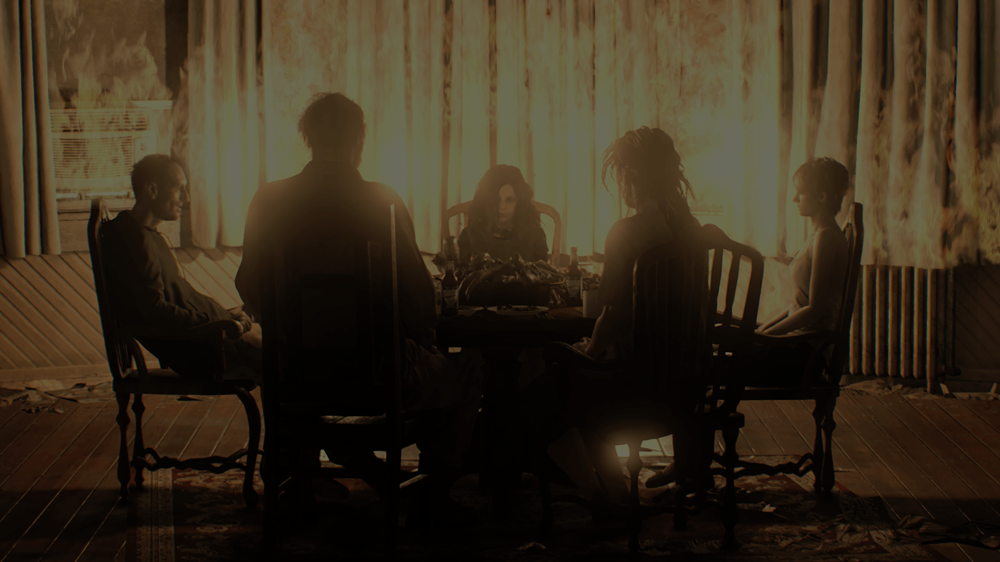

Descubra os Jogos da série Resident Evil
Resident Evil 4
Planejado desde dezembro de 1999, Resident Evil 4 foi submetido a um longo processo de desenvolvimento, durante o qual quatro versões propostas para o jogo foram descartadas. Inicialmente desenvolvido para o PlayStation 2, a primeira produção foi dirigida por Hideki Kamiya depois que o produtor Shinji Mikami pediu-lhe para criar um novo título para a série Resident Evil. No entanto, foi decidido iniciar o desenvolvimento novamente. O jogo foi destinado a ser um exclusivo do GameCube como parte do Capcom Five, mas uma versão para PlayStation 2 foi anunciada antes do jogo ser lançado no GameCube. Posteriormente também Resident Evil 4 foi lançado para Microsoft Windows, Wii, PlayStation 3, Xbox 360 e em versões reduzidas para iOS, Zeebo e Android. Resident Evil 4 recebeu aclamação da crítica. Ele ganhou muitos prêmios de Jogo do Ano em 2005 e foi visto como um sucesso multiplataforma que influenciou a evolução dos gêneros survival horror e de tiro em terceira pessoa. O jogo também foi pioneiro e popularizou a perspectiva de visão "sobre o ombro" em terceira pessoa. Desde então, tem sido amplamente considerado um dos melhores jogos de todos os tempos.
Resident Evil 7
Resident Evil 7 foi anunciado durante a E3 2016 depois de vários rumores. Mais tarde naquele dia, uma demonstração intitulada Resident Evil 7 Teaser: Beginning Hour foi lançada na PlayStation Store para os assinantes da PlayStation Plus. Liderado por Koshi Nakanishi, diretor de Resident Evil: Revelations, a equipe de desenvolvimento foi composta por cerca de 120 pessoas. Em vez de ser centrado na ação como seus antecessores Resident Evil 5 e 6, os elementos de survival horror e a exploração tiveram prioridade no novo título. Para isso, o jogo utiliza uma perspectiva em primeira pessoa. Eles usaram o novo motor gráfico RE Engine, que já tinha sido testado na demonstração em realidade virtual KITCHEN na E3 de 2015. Após o lançamento, o jogo recebeu avaliações geralmente favoráveis dos críticos, que elogiaram a jogabilidade, os gráficos e o design. A versão para PlayStation VR foi enaltecida por aumentar o envolvimento do jogador, mas também foi alvo de reclamações por ter a resolução diminuída e causar desconforto físico. Outras queixas foram dirigidas às batalhas contra chefes e ao capítulo final da história. Até o final de março de 2017, o jogo tinha vendido mais de três milhões e meio de cópias, sendo a terceira melhor estreia de um título da série.
Resident Evil 8
O anúncio de Village aconteceu em Junho de 2020, durante evento especial para apresentação dos primeiros jogos que seriam lançados para o Playstation 5. Com isto, surgiram diversos questionamentos se o jogo seria exclusivo para a nova geração ou se a Capcom pretendia portar também para a geração considerada, então, passada, do PS4/Xbox One. É importante ressaltar, contudo, que este foi o jogo da série que mais foi marcado por rumores e a presença de insiders nas redes, revelando supostos detalhes antes da hora. E um destes rumores envolviam justamente testes com fãs, os Ambassadors, na plataforma PS4 Pro. Eventualmente, então, a Capcom revelou que o jogo sairia para as duas gerações, e graças à potência da RE Engine, o jogo ficou extremamente bem otimizado em todas as plataformas para as quais saiu. De acordo com os produtores, o desenvolvimento de Resident Evil Village começou pouco antes do lançamento de Resident Evil 7. Além disso, seu tempo total de produção foi de cerca de 4 anos. Infelizmente, porém, a pandemia de COVID-19 foi um obstáculo em seu ano final, especialmente no marketing um pouco desastroso. Como se esquecer do gameplay com a tela coberta, que só podíamos ouvir, na Tokyo Game Show 2020? Ainda assim,nada tirou o brilho do jogo em seu lançamento.